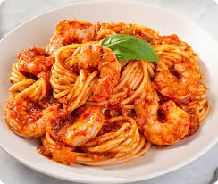

Recetas de Mariscos
Inicio
Camarones al Ajillo
Una receta fácil y deliciosa para disfrutar de los camarones con ajo y especias frescas.

Ingredientes
Camarones frescos
Ajo picado
Aceite de oliva
Sal, pimienta y especias al gusto
Instrucciones
Calienta el aceite de oliva en una sartén grande.
Agrega los camarones y cocina hasta que estén dorados.
Agrega el ajo picado y cocina hasta que se dore.
Sirve caliente y disfruta con arroz o ensalada.
Inicio